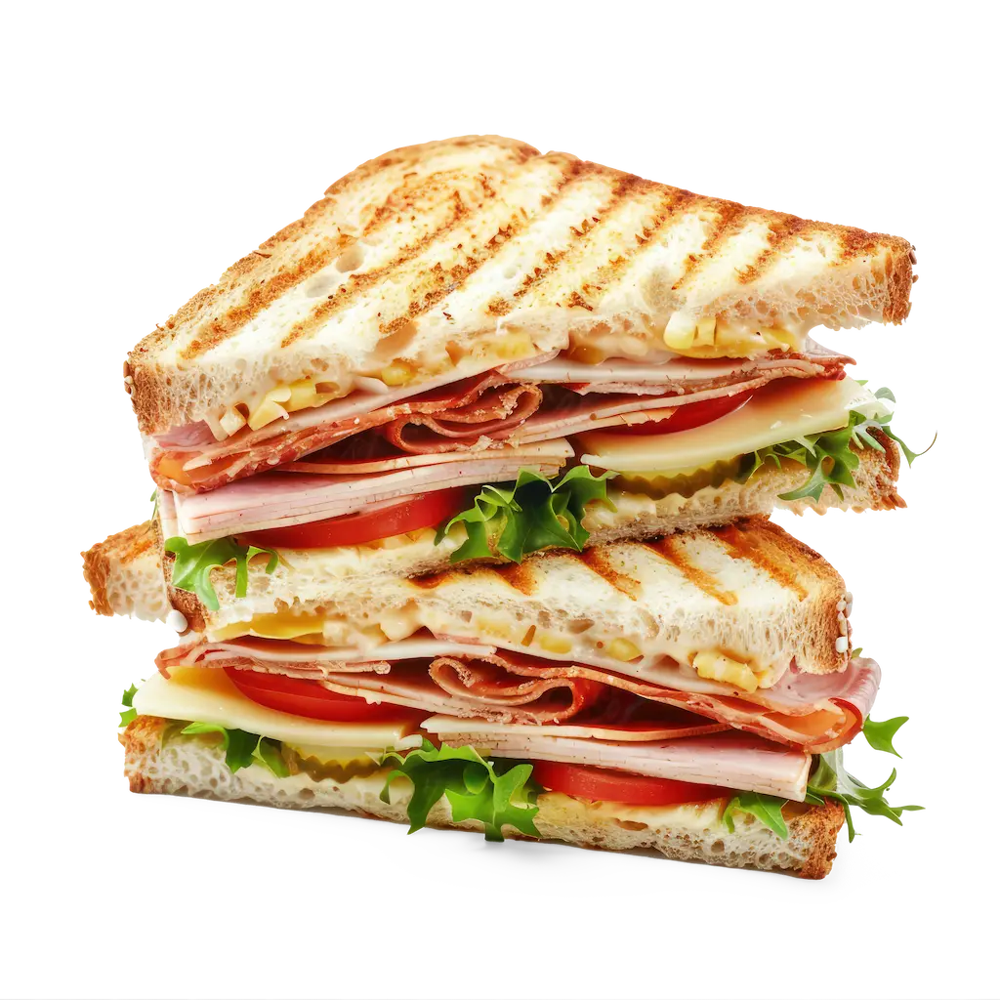

Club Sándwich
Tiempo: 15 minutos · Dificultad: Muy Fácil · Porciones: 1 sándwich grande

Preparación
- Tuesta las 3 rebanadas de pan de molde hasta que adquieran un color dorado y crujiente.
- Unta mayonesa y mostaza sobre una cara de la primera rebanada de pan.
- Coloca encima una hoja de lechuga, rodajas de tomate, la pechuga de pavo y una loncha de queso.
- Unta mayonesa en ambos lados de la segunda rebanada de pan y colócala encima de la primera capa.
- Agrega sobre esta rebanada el tocino crujiente, la otra hoja de lechuga, la loncha de queso restante y más pavo.
- Unta mayonesa en la tercera rebanada de pan y cierra el sándwich presionando suavemente.
- Asegura la estructura clavando 4 palillos en cada esquina y corta el sándwich en 4 triángulos diagonales.
¡Un clásico de pisos crujiente, completo e ideal para cualquier hora!
Tips de nuestra comunidad
Descubre recetas, combinaciones y secretos compartidos por otros amantes de la cocina. ¿Tienes un secreto de cocina?
Compártelo con la comunidad.
Pasa el sándwich ya armado unos minutos por la prensa o tostadora; el queso ligeramente derretido le da una consistencia espectacular.
Acompaña tradicionalmente con papas fritas de bolsa o papas a la francesa saladas.